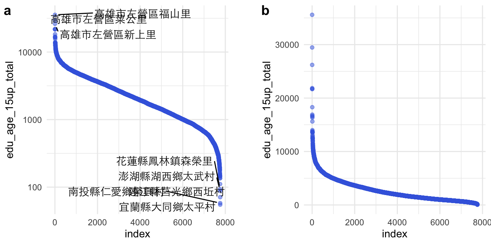
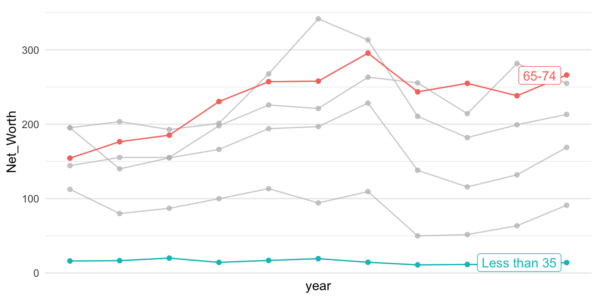
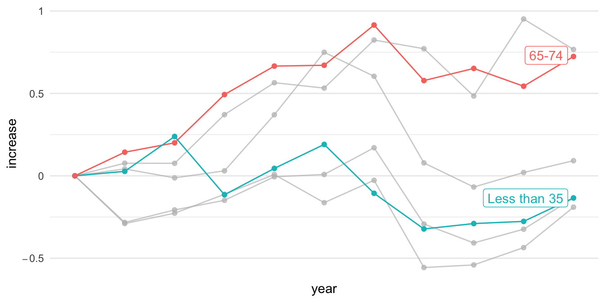

Chapter 14 Coordinate
本章節談論的是視覺化圖表的座標軸，本章節所涵蓋的概念可參考Claus O. Wilke所著之Fundamentals of Data Visualization的Chap3 Coordination & Axis與Chapter 8 Visualizing distributions: Empirical cumulative distribution functions and q-q plots。
14.1 座標軸為資料排序
學術論文若要呈現一群數據的分佈時，最常用的是密度（分佈）函數、累積分佈函數，最常視覺化的方法是密度分佈圖（geom_density()）或直方圖（geom_histogram())。然而，對新聞等強調「說故事」的文體而言，說故事的技巧往往不是「那一群資源多或資源少的對象」，而經常要直指「那個對象」，要能夠看得見所敘述的對象在圖中的位置。此時，用密度分佈來呈現的話，只能看出，該對象在分佈的某個位置；但可以改用將資料對象根據某個數據來排序後，繪製折現圖的方式來表現。例如，若要繪製一個班級的成績分佈，通常X軸是分數（組），Y軸是獲得該分數（組）的人數；但其實可以將個體依照分數來做排序，Y軸不是某個分數（組）的個數，而是每個排序後的個體，而且以排序後的序號（Ranking）來表示。用折線圖繪製後，一樣可以看出分數的分佈，但卻能夠直接標記敘事中的某個對象是Y軸中得哪個點。
14.1.1
Figure 3.5: Population numbers of Texas counties relative to their median value. Select counties are highlighted by name. The dashed line indicates a ratio of 1, corresponding to a county with median population number. The most populous counties have approximately 100 times more inhabitants than the median county, and the least populous counties have approximately 100 times fewer inhabitants than the median county. Data source: 2010 Decennial U.S. Census.
See What’s Going On in This Graph? | Vaccination by Country fromWhat Data Shows About Vaccine Supply and Demand in the Most Vulnerable Places - The New York Times (nytimes.com)
The original chart is animated along the timeline.What Data Shows About Vaccine Supply and Demand in the Most Vulnerable Places - The New York Times (nytimes.com)

14.2 用Log-scale放大長尾頭部
raw <- read_csv("data/opendata107Y020.csv", show_col_types = FALSE) %>%
slice(-1) %>%
type_convert()
toplot <- raw %>%
select(site_id, village, edu_age_15up_total) %>%
arrange(desc(edu_age_15up_total)) %>%
mutate(index = row_number()) %>%
mutate(label = ifelse(index <= 5 | index > n()-5, paste0(site_id, village), ""))
library(ggrepel)
p2 <- toplot %>% ggplot() + aes(index, edu_age_15up_total) +
geom_point(alpha=0.5, color="royalblue") +
geom_text_repel(aes(label = label), point.padding = .4, color = "black",
min.segment.length = 0, family = "Heiti TC Light") +
theme(axis.text.x=element_blank()) +
scale_y_log10(breaks = c(0, 1, 10, 100, 1000, 10000)) +
theme_minimal()
p1 <- toplot %>% ggplot() + aes(index, edu_age_15up_total) +
geom_point(alpha=0.5, color="royalblue") +
theme(axis.text.x=element_blank()) +
theme_minimal()
cowplot::plot_grid(
p2, NULL, p1,
labels = c("a", "", "b"), nrow = 1, rel_widths = c(1, 0.1, 1)
)
14.3 Square-root scale
Chap3 Coordination & Axis Fundamentals of Data Visualization (clauswilke.com)

Figure 3.8: Areas of Northeastern U.S. states. (a) Areas shown on a linear scale. (b) Areas shown on a square-root scale. Data source: Google.
前面是視覺化了各村里大於十五歲以上人口的人口數分佈，採用對數尺度（log-scale）可以觀察到比較小的村里。那有什麼是適合用平方根尺度（sqrt-scale）的呢？是土地嗎？密度嗎？還是人口數？是村里等級嗎？鄉鎮市區等級嗎？還是縣市等級？
town <- read_csv("data/tw_population_opendata110N010.csv") %>%
slice(-1, -(370:375)) %>%
type_convert()
town %>%
arrange(desc(area)) %>%
mutate(index = row_number()) %>%
ggplot() + aes(index, area) %>%
geom_col(fill="skyblue") +
scale_y_sqrt() +
theme_minimal()Figure 14.1: (ref:population-area)
county <- town %>%
mutate(county = str_sub(site_id, 1, 3)) %>%
group_by(county) %>%
summarize(
area = sum(area),
people_total = sum(people_total)
) %>%
ungroup()
p1 <- county %>%
arrange(desc(people_total)) %>%
mutate(index = row_number()) %>%
ggplot() + aes(index, people_total) %>%
geom_col(fill="lightgrey") +
# scale_y_sqrt() +
theme_minimal()
p2 <- county %>%
arrange(desc(people_total)) %>%
mutate(index = row_number()) %>%
ggplot() + aes(index, people_total) %>%
geom_col(fill="khaki") +
scale_y_sqrt(breaks=c(0, 250000, 500000, 1000000, 2000000, 4000000)) +
theme_minimal()
cowplot::plot_grid(
p1, p2,
labels = c("a", "b"),
nrow = 1
)Figure 14.2: (ref:population-area)
library(tidyverse)
library(gghighlight)14.4 座標軸從數值到增加值
14.4.1 Net Worth by Age Group (WGOITG of NYTIMES)
LEARNING NOTES
Median for Inequality
這個教學案例來自紐約時報的「What’s going on in this gragh」系列資料視覺化教學之Teach About Inequality With These 28 New York Times Graphs - The New York Times (nytimes.com) 。該圖表呈現在不同年代、不同年齡層的人所擁有的淨資產（包含土地、存款、投資等減去債務）。該圖表的結果指出，在不同年代的老年人是越來越有錢，但年輕人卻越來越窮（該曲線為減去1989年

14.4.2 Read and sort data
Sorted by arrange() function.
p1 <- read_csv("data/interactive_bulletin_charts_agecl_median.csv") %>%
select(year, Category, Net_Worth) %>%
group_by(Category) %>%
arrange(year) %>%
ungroup()
p1 %>% filter(year <= 1992) %>% knitr::kable()| year | Category | Net_Worth |
|---|---|---|
| 1989 | Less than 35 | 16.17019 |
| 1989 | 35-44 | 112.47530 |
| 1989 | 45-54 | 195.11630 |
| 1989 | 55-64 | 195.25554 |
| 1989 | 65-74 | 154.34277 |
| 1989 | 75 or older | 144.29855 |
| 1992 | Less than 35 | 16.60780 |
| 1992 | 35-44 | 79.91050 |
| 1992 | 45-54 | 139.97745 |
| 1992 | 55-64 | 203.44104 |
| 1992 | 65-74 | 176.44667 |
| 1992 | 75 or older | 155.35173 |
p1 %>% ggplot() + aes(year, Net_Worth, color = Category) +
geom_line(linetype="dotted") +
geom_point() +
gghighlight(Category %in% c("65-74", "35-44")) +
theme_minimal() +
scale_x_continuous(breaks = NULL) +
theme(panel.background = element_rect(fill = "white",
colour = "white",
size = 0.5, linetype = "solid"))p2 <- read_csv("data/interactive_bulletin_charts_agecl_median.csv") %>%
select(year, Category, NW = Net_Worth) %>%
group_by(Category) %>%
arrange(year) %>%
mutate(increase = (NW-first(NW))/first(NW)) %>%
ungroup()
p2 %>% filter(year <= 1992) %>% knitr::kable()| year | Category | NW | increase |
|---|---|---|---|
| 1989 | Less than 35 | 16.17019 | 0.0000000 |
| 1989 | 35-44 | 112.47530 | 0.0000000 |
| 1989 | 45-54 | 195.11630 | 0.0000000 |
| 1989 | 55-64 | 195.25554 | 0.0000000 |
| 1989 | 65-74 | 154.34277 | 0.0000000 |
| 1989 | 75 or older | 144.29855 | 0.0000000 |
| 1992 | Less than 35 | 16.60780 | 0.0270627 |
| 1992 | 35-44 | 79.91050 | -0.2895285 |
| 1992 | 45-54 | 139.97745 | -0.2825948 |
| 1992 | 55-64 | 203.44104 | 0.0419220 |
| 1992 | 65-74 | 176.44667 | 0.1432131 |
| 1992 | 75 or older | 155.35173 | 0.0765994 |
p2 %>% ggplot() + aes(year, increase, color = Category) +
geom_line(linetype="dotted") +
geom_point() +
gghighlight(Category %in% c("65-74", "35-44")) +
theme_minimal() +
scale_y_continuous(labels=scales::parse_format()) +
scale_x_continuous(breaks = NULL) +
theme(panel.background = element_rect(fill = "white",
colour = "white",
size = 0.5, linetype = "solid"))
14.5 等比例座標軸
14.5.1 UNICEF-Optimistic (WGOITH)
https://www.nytimes.com/2021/11/17/upshot/global-survey-optimism.html https://changingchildhood.unicef.org/about
plot.opt <- read_csv("data/unicef-changing-childhood-data.csv") %>%
select(country = WP5, age = WP22140, bw = WP22092) %>%
mutate(country = ordered(country,
levels=c(1, 3, 4, 10, 11, 12,
13, 14, 17, 29, 31,
33, 35, 36, 60, 61,
77, 79, 81, 87, 165),
labels=c("USA", "Morocco", "Lebanon",
"Indonesia", "Bangladesh",
"UK", "France", "Germany",
"Spain", "Japan", "India",
"Brazil", "Nigeria", "Kenya",
"Ethiopia", "Mali", "Ukraine",
"Cameroon", "Zimbabwe",
"Argentina", "Peru"))) %>%
count(country, age, bw) %>%
group_by(country, age) %>%
mutate(perc = n/sum(n)) %>%
ungroup() %>%
filter(bw == 1) %>%
select(country, age, perc) %>%
spread(age, perc) %>%
rename(`15-24y` = `1`, `40+y` = `2`)
plot.opt %>% head(10) %>% knitr::kable()| country | 15-24y | 40+y |
|---|---|---|
| USA | 0.6679842 | 0.4611465 |
| Morocco | 0.4365079 | 0.4735812 |
| Lebanon | 0.5467197 | 0.4435798 |
| Indonesia | 0.7920605 | 0.8027344 |
| Bangladesh | 0.4624506 | 0.4319527 |
| UK | 0.5040000 | 0.4140000 |
| France | 0.3900000 | 0.2640000 |
| Germany | 0.5900000 | 0.3860000 |
| Spain | 0.5160000 | 0.3340000 |
| Japan | 0.6367265 | 0.2586873 |
plot.opt %>%
ggplot() + aes(`40+y`, `15-24y`, label = country) +
geom_point(color = "skyblue", size = 2) +
xlim(0, 1) + ylim(0,1) +
geom_text(hjust = -0.1, vjust = -0.5) +
geom_abline(intercept = 0, slop = 1,
color="lightgrey", alpha=0.5, linetype="dashed") +
theme_minimal() +
theme(aspect.ratio=1)